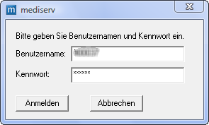
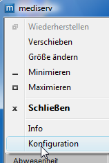
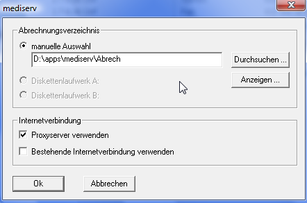
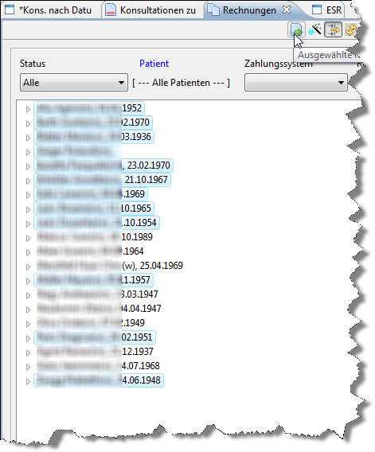
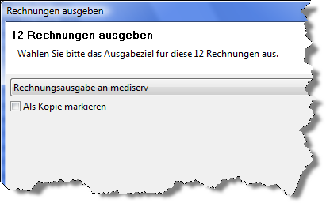
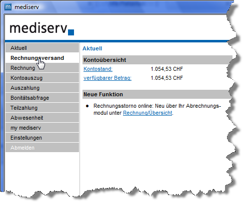
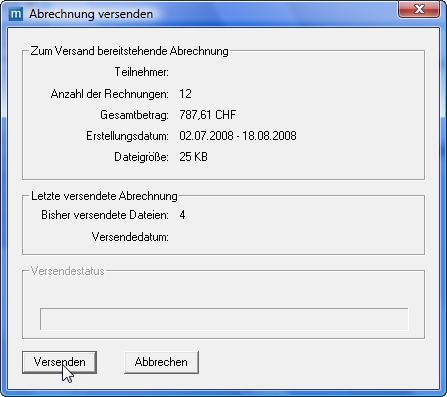

Ch.elexis.mediserv.feature.feature.group
| Version: | 3.0 |
| Kategorie: | |
| Beschreibung: | |
| Author: | |
| Letzte Bearbeitung: | 21. Juni 2014 |
| Voraussetzungen: | Elexis 3.0 |
| Betriebssystem: | Windows, Mac, Linux |
| Lizenz: | proprietär |
Einführung
Dieses Plugin stellt ein Ausgabeziel für Rechnungen zur Übermittlung an mediserv1 bereit. Genauere Informationen zum Elexis Konzept der Ausgabeziele finden Sie im Elexis-Handbuch2 und im Handbuch zur Tarmedrechnung 3.
Installation und Konfiguration
Die Installation des Plugins erfolgt wie gewohnt durch einfaches Kopieren in das "plugins" – Verzeichnis von Elexis. Sie benötigen aber zusätzlich noch das mediserv-Transferprogramm und ein Konto bei mediserv, das Sie direkt dort bestellen können. Installieren Sie zunächst dieses Programm gemäss Herstellerangaben. Starten Sie das Mediserv-Programm zunächst ein erstes Mal allein, um die Verbindung zu testen.

[fig:mediserv1]
Geben Sie im Anmeldefenster (s. Abb. [fig:mediserv1]) Ihren Benutzernamen und Passwort wie von mediserv erhalten ein. Nach dem ersten Login werden Sie zunächst aufgefordert, das Vorgegebene Passwort gegen ein Selbstgewähltes zu ersetzen. Tun Sie das. Danach ist Ihr mediserv-Transferprogramm bereit. Es ist aber empfehlenswert, vor dem ersten Gebrauch noch das Abrechnungsverzeichnis an eine andere Stelle zu verlegen4 [htbp] 0.3  [fig:mediserv7] 0.7  [fig:mediserv8] Klicken Sie hierzu auf das ‘mediserv’-Logo links oben am mediserv-Programmfenster (Abb. [fig:mediserv7]) und wählen Sie ‘Konfiguration’. Es öffnet sich die Dialogbox wie in Abb. [fig:mediserv8]. Stellen Sie dort ein Verzeichnis an einem geeigneten Ort ein und klicken Sie ‘OK’.
Plugin-Konfiguration
[fig:mediserv2]
Starten Sie Elexis und gehen Sie im Menu auf Datei-Einstellungen-Abrechnungssysteme-mediserv (S. Abb. [fig:mediserv2]). Geben Sie unter Rechnungs-Transferverzeichnis das Verzeichnis an, in dem Elexis die ausgegebenen Rechnungen zwischenspeichern soll. Hier müssen Sie das wie oben beschrieben eingestellte Abrechnungsverzeichnis eingeben. Wenn Sie nichts eingestellt haben, ist das c:\backslashprogramme\backslashmediserv\backslashAbrech. (Wie gesagt: Unter Vista wird es an diesem Ort nicht funktionieren.) Unter ‘mediserv-Programm’ geben Sie die mediserv-exe-Datei an (Standardmässig mserv_cl.exe).
Verwendung
Es ist empfehlenswert, dass Sie das Elexis-Handbuch zur Tarmed-Abrechnung lesen, um das grundsätzliche Konzept zu verstehen, nach dem Elexis Rechnungen erstellt und verwaltet. Dieses Plugin stellt ein eigenes Ausgabeziel für Rechnungen zur Verfügung, tritt somit erst beim Ausgeben der Rechnungen in Aktion:

[fig:mediserv3]
Erstellen Sie Ihre Rechnungen wie gewohnt (Abb. [fig:mediserv3]) und markieren Sie die an mediserv auszugebenden. Klicken Sie dann auf Ausgabe und wählen Sie als Ausgabeziel ‘mediserv’ aus (Abb. [fig:mediserv4])

[fig:mediserv4]
Elexis schreibt dann die Rechnungen ins eingestellte Transferverzeichnis und startet das Mediserv-Programm. Dieses Übernimmt die weitere Kontrolle vollständig. Nach Eingabe Ihres Passworts gelangen Sie zur Übersichtsseite (S. Abb. [fig:mediserv5]).

[fig:mediserv5]
Klicken Sie hier auf Rechnungsversand, dann werden Ihre Rechnungen abgeschickt (Abb. [fig:mediserv6]). Bei Fehlern werden diese direkt im mediserv-Programm angezeigt und können bearbeitet werden.

[fig:mediserv6]
1 http://www.mediserv.ch 2 http://www.elexis.ch/files/handbuch/elexis.pdf 3 http://www.rgw.ch/elexis/dox/elexis-arzttarife-schweiz.pdf 4 Für Vista-Anwender ist dieser Schritt sogar zwingend, weil das Programmverzeichnis unter Vista nur für den Administrator beschreibbar ist.